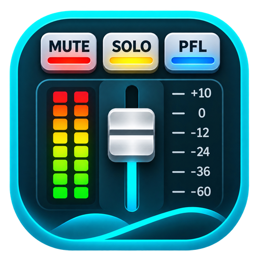
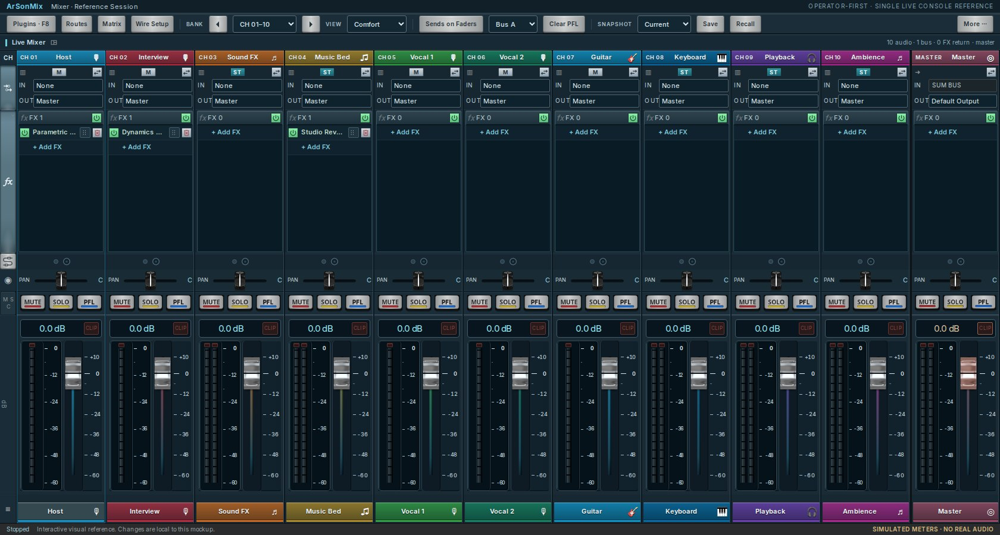

Channel-first mixing
Create and rename channels, control levels, and prepare WIRE or SOURCE ONLY routes in an offline logical session.

Mix vocals, karaoke and live streams your way. Connect your sound card, shape your sound with effects, and route channels in one flexible digital mixer.
Free to download · Windows alpha preview · Earlier Linux/macOS builds · No account required

One approved mixer interface for channel control, effects and signal flow. Browser preview is visual only; real audio needs the installed app.
Take a look around the mixer in your browser. Install the desktop app to connect your audio devices and start mixing.
Bring your microphones, music and sound card together with straightforward controls and flexible routing.
Create and rename channels, control levels, and prepare WIRE or SOURCE ONLY routes in an offline logical session.
Native harmony FX with an 8 ms bypass fade and Music-guide recovery. Production DSP latency remains 32 ms.
Manage music and relink missing files by unique full filename while preserving each track’s KEY and TEMPO.
The latest verified Windows alpha preview is listed below. Linux and macOS may use older released builds. Download buttons select verified official assets and show the version for each platform.
Windows 10/11 · 64-bit
Not available yetLinux · 64-bit
Not available yetApple Silicon and Intel
Not available yetTry the interactive mixer, then download the desktop app and make it your own.